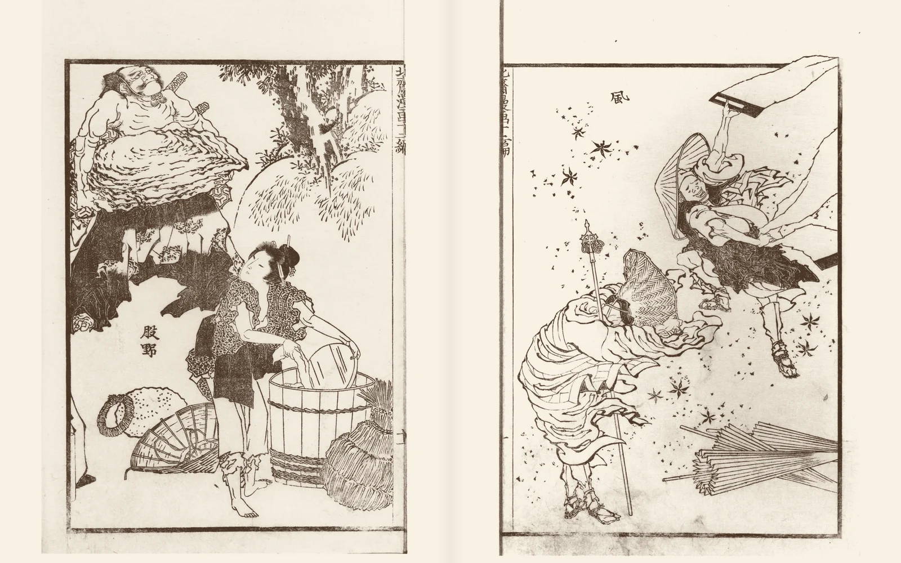
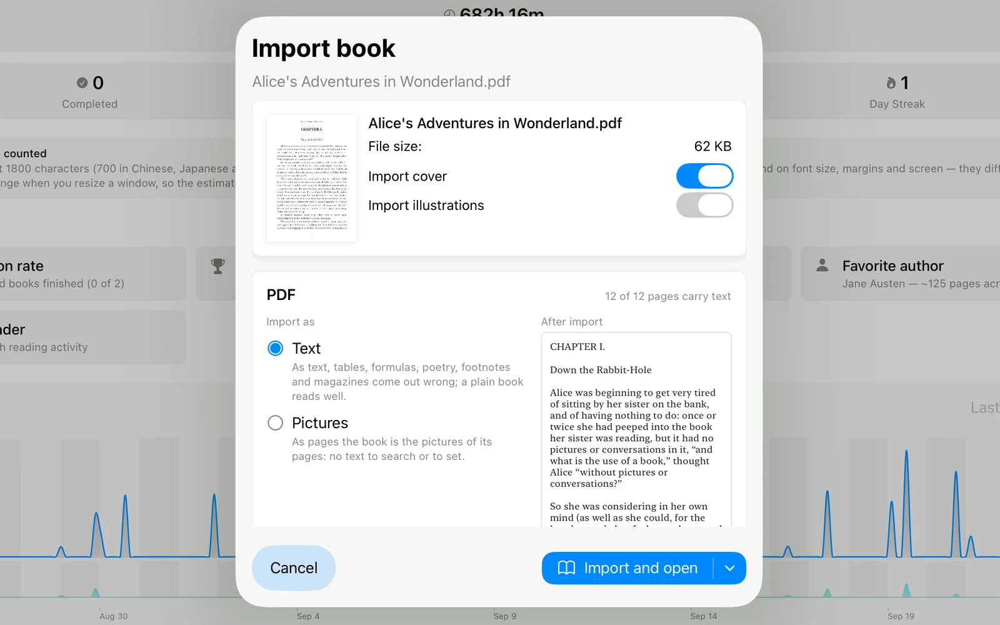
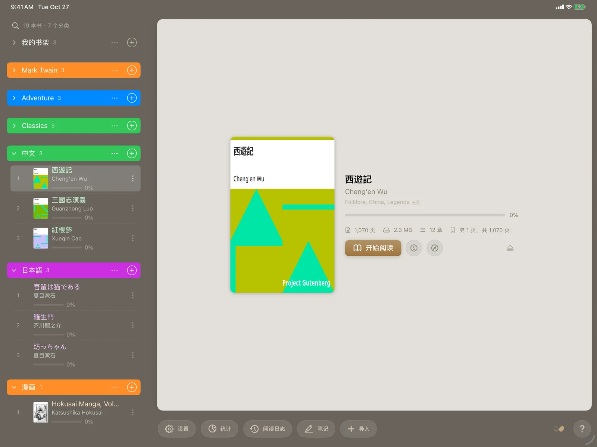
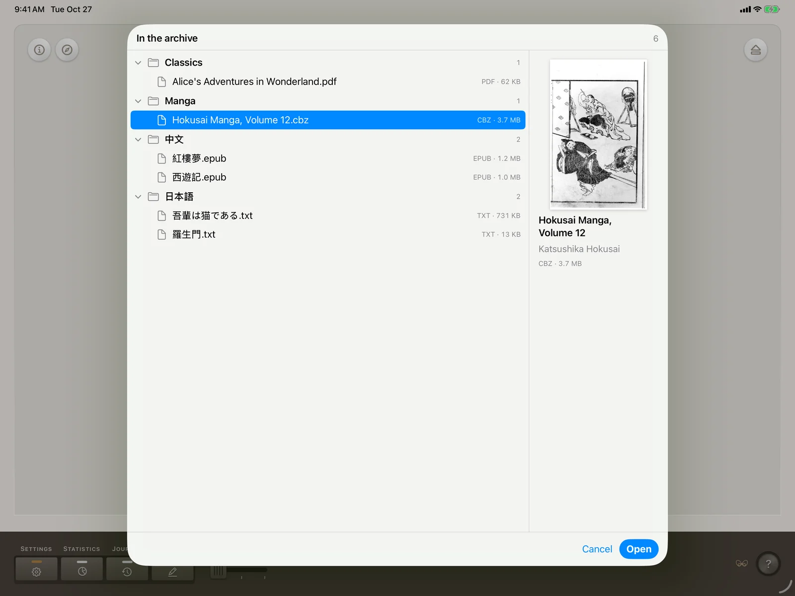
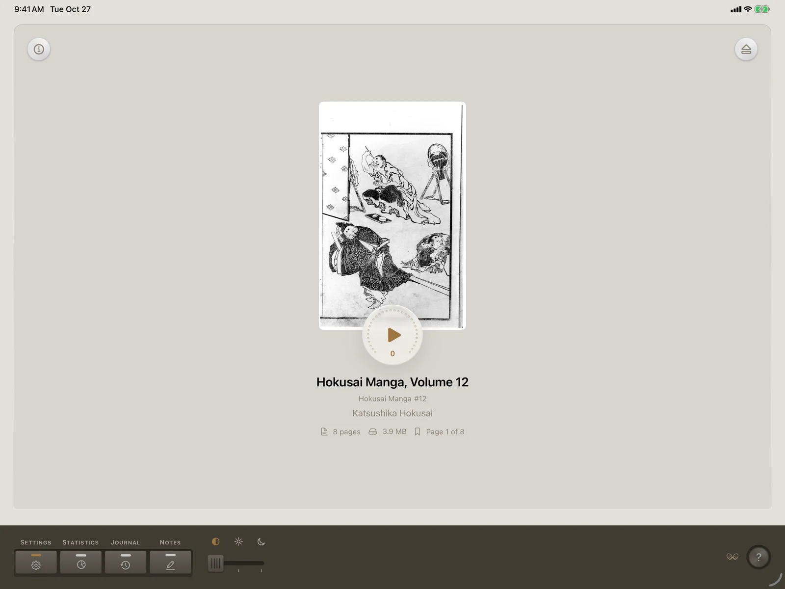
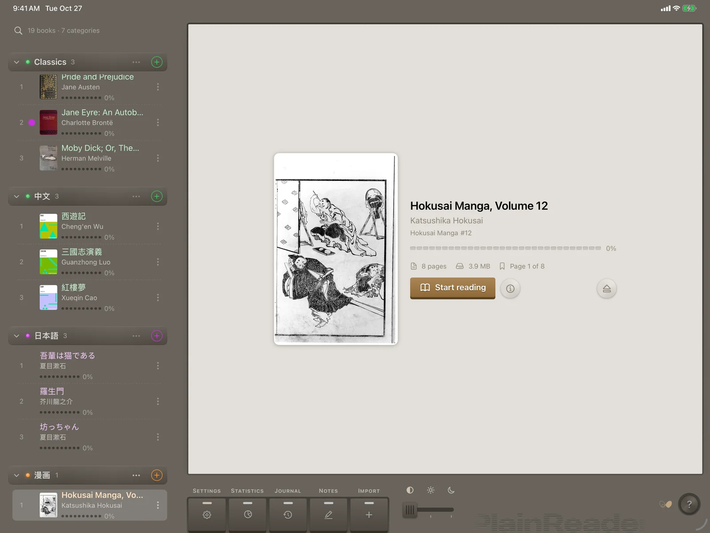

“Orient Express”
October 2026. This release heads east: manga and comics, PDF, Chinese and Japanese. Below are the key changes; the full list is in the changelog.
Books made of pictures open like any other: CBZ, CBR and fixed-layout EPUB. Manga reads right to left, in spreads, with the cover on its own, as in a printed volume. In Comfort these books have settings of their own: a tint in the theme’s colour and the page’s brightness for reading at night.

Zoom into any page to look closer: pinch, ⌘ with the scroll wheel, or a double tap. On the Mac a double F12 opens a grid of every page in the book, and as you scrub along the position bar you see the page or spread you will land on. Books of pictures are heavy, so when one is too big the import offers to make its pictures smaller.
A PDF can be imported in two ways. Extract the text, and the book behaves like any other — with fonts, themes, columns and translation. Complex formatting is lost on the way, so tables, formulas and multi-column layouts come out poorly. Or keep the pages as pictures, exactly as in the file, and read the PDF like manga (which is why the two came in one release).

Before the import a wizard shows what the book will look like, and the settings can be adjusted. If you don’t like the result, convert the book again from its card with other settings. A password-protected PDF is recognised, and the app declines to import it at once, suggesting you remove the password first.
All three apps now come in Simplified Chinese and Japanese. Chinese and Japanese books open in their own encodings, old TXT files in GB18030, Big5, Shift_JIS and EUC-JP included. The page count allows for a character being denser than a letter.

Japanese books keep their furigana, the reading aids over the characters. Texts from Japan’s Aozora Bunko library open with their markup understood: the readings become furigana, the headings become chapters, and the editors’ notes go.
Kindle books in AZW3 without DRM open like ordinary ones, with their cover, chapters and pictures. Markdown files become books too, their headings becoming chapters. Comics in RAR (CBR) read just like CBZ.

When an archive holds several books, the app shows a list of them, with nested folders and a preview of the chosen book — its first page or its cover. In ContinuousReader and PlainReader you can tick several books, or all of them, and add them in one go with the same settings. On the Mac, Mass Import takes archives of books too, and the download basket takes PDF, CBZ and CBR.
A new column in the table and a badge on the book card show where a book is: on this device, in the cloud only, missing, or linked to a file on disk. Statistics can be seen for all devices together, for this one only, or for any other of yours.
The buttons on the bottom bar can show their names or icons only. The iPad gets an experimental Retro skin: the home screen styled as an old tape deck, with keys that run to the very edge of the screen, a theme switch and a knob. In PlainReader it dresses the shelf too — LEDs show the books’ progress, and the dividers turn into metal nameplates. In JustReader, Retro is on from the start on the iPad.


In PlainReader on the phone and the iPad, menus open as large rows, and a book in the list can be swiped to read it, change its colour, move it or take it off the shelf. The import dialog shows from its first step which category the book will go to. JustReader’s home screen on the Mac can be used from the keyboard.
That is the picture. The full list, item by item, is in the changelog.